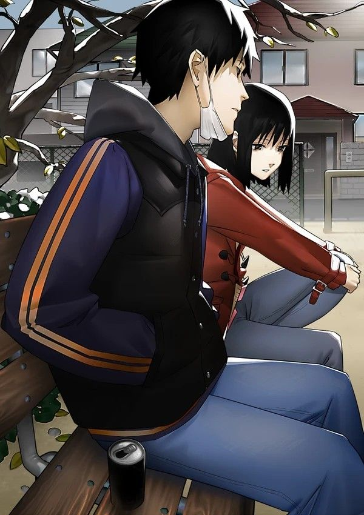

ğ€ğ«ğ ğ“ğ¡ğ«ğ¨ğ®ğ ğ¡ 𝐌𝐲 ğğğ«ğ¬ğ©ğğœğğ¢ğ¯ğ

Art in My Eyes
Art, a realm of imagination and expression, often evokes romanticized notions of beauty and inspiration.
People gaze upon masterpieces, captivated by the strokes of brilliance that adorn canvases and the melodies
that serenade their ears, seldom realizing the depths of emotion, sacrifice, and inner turmoil that artists
endure to bring their creations to life. As we delve deeper into the world of art, "Art in My Eyes" seeks to
unravel the intricate tapestry that lies beneath the surface, shedding light on the profound struggles and
unwavering dedication that artists grapple with.
The Romanticized Facade vs. The Hidden Reality
The enchantment that surrounds art and artists often stems from a superficial perspective, where the final
outcome is celebrated without comprehending the profound journey that led to its inception.
The world beholds paintings that breathe life, sculptures that convey emotions frozen in time, and melodies that touch souls.
Yet, few glimpse the artist's late-night vigils, pouring heart and soul into their work,
or the moments of self-doubt that haunt them during the creative process.
The reality is that behind those aesthetically pleasing works lies a profound and often painful reality.
The Creative Abyss: Addiction to Creation
Artists, bound by their relentless pursuit of creativity, often find themselves ensnared in a
unique addiction—the craving to create. This addiction transcends the realms of conventional perception,
driven by an insatiable hunger to give form to the abstract musings of their mind. The artist becomes a mere vessel,
channeling raw emotions and visions into their art, even if it means sacrificing sleep, comfort,
and personal well-being. This relentless dedication to their craft paints a portrait of an artist who would
rather face the depths of exhaustion than sever the ties that bind them to their creative expression.
The Perilous Dance: A Symphony of Sacrifice
As the creative addiction takes root, artists navigate a perilous dance between their passion and their well-being.
The pursuit of perfection often drives them to extremes, pushing boundaries physically, mentally, and emotionally.
Sleepless nights, skipped meals, and the relentless pursuit of an unattainable vision become their daily companions.
The artist treads a fine line between self-destruction and artistic evolution, driven by an insatiable desire to manifest their innermost thoughts.
It's a paradoxical existence where the act of creation itself can simultaneously elevate and deplete, nourish and torment.
Misery and Salvation: The Paradox of Art
The profound paradox that defines an artist's relationship with their craft lies in the intersection of misery and salvation.
The very act that can drive an artist to the brink of exhaustion and despair is also the lifeline that rescues them from the abyss.
In those solitary moments, when the world fades away and the artist's focus narrows to their canvas or instrument,
a sense of purpose washes over them. It becomes their refuge, their solace, their way of making sense of the chaotic symphony of emotions that echo within.
The Enigmatic Love for Suffering: The Artist's Masochism
Within the heart of the artist, a peculiar affinity for suffering resides—a masochism that fuels their creative fire.
The torment that comes hand in hand with creation is paradoxically embraced and even welcomed.
The struggle, the self-doubt, the restless nights—they become an integral part of the artistic journey.
It's a testament to the artist's resilience, an acknowledgment of their willingness to traverse the treacherous path less traveled.
The very suffering that outsiders may see as a deterrent is, in the eyes of the artist, a driving force, a muse that awakens their spirit.
In Conclusion: A Multifaceted Portrait of Art and Artists
"Art in My Eyes" transcends the superficial lens through which art is often perceived. It lays bare the complexities that underlie the world of artistic creation,
illuminating the struggles, sacrifices, and the unparalleled dedication that artists invest in their work. It showcases how the beauty of art is not merely a stroke of genius,
but a culmination of countless moments of agony and ecstasy. The artist, shackled by their creative addiction, dances on the precipice of their own desires,
embracing suffering as an integral part of their identity. It is a tale of passion, of endurance, and of the profound connection between misery and
salvation—an ode to the enigmatic masochism that makes artists the extraordinary beings they are.